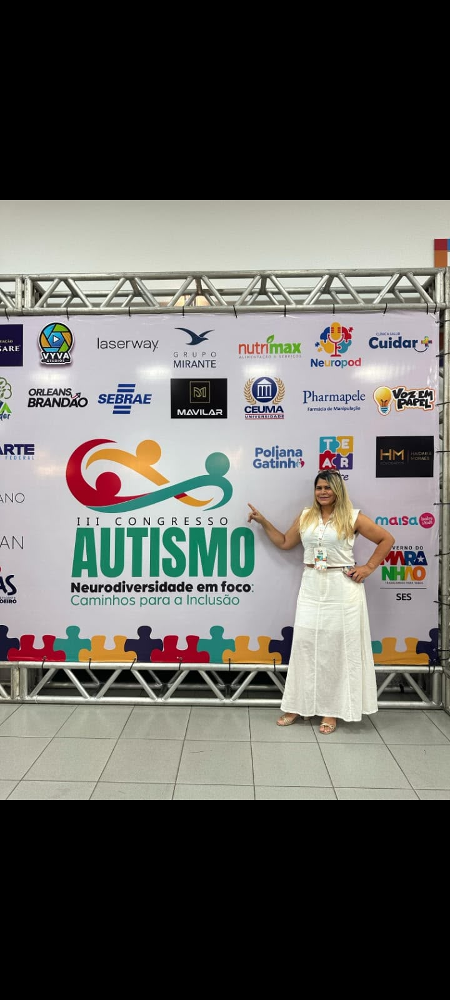
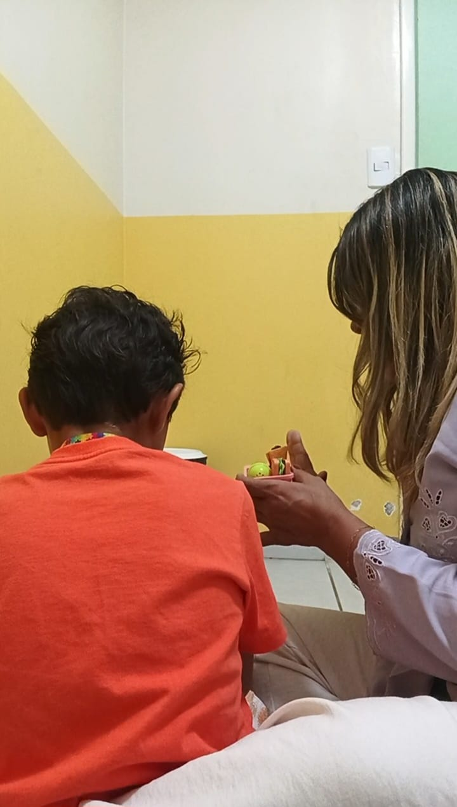
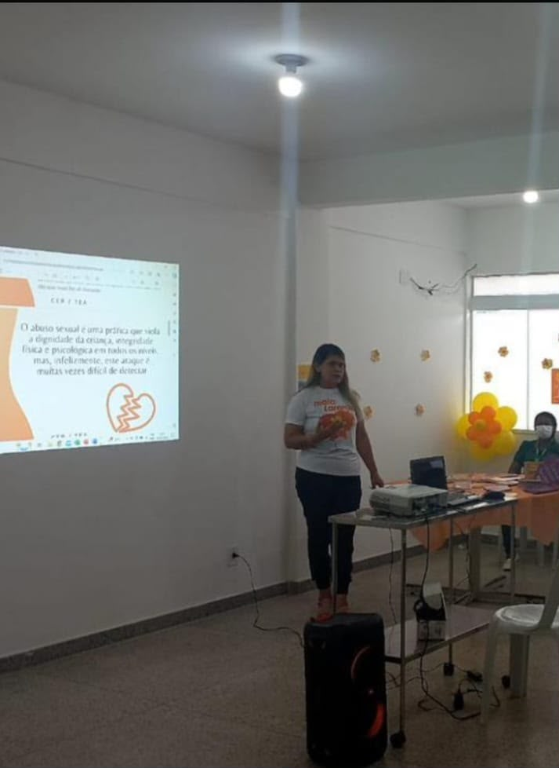

Avaliação neuropsicológica
Investigação das funções cognitivas, emocionais e comportamentais — atenção, memória, linguagem, aprendizagem e funções executivas — para compreender potencialidades e dificuldades com clareza.
O que é investigadoCRP 22/00956 · São Luís – Maranhão
Sou Claudenice Bezerra, psicóloga clínica e neuropsicóloga. Trabalho com Terapia Cognitivo-Comportamental, avaliação neuropsicológica e atendimento especializado em autismo — com escuta, método e cuidado para cada pessoa.

Sobre mim
Minha atuação é baseada na Terapia Cognitivo-Comportamental (TCC), voltada à saúde mental e ao desenvolvimento cognitivo, emocional e comportamental. Cada atendimento é individualizado: acolhimento primeiro, cuidado especializado sempre.
Atuo com avaliação neuropsicológica e atendimento terapêutico, com atenção especial ao Transtorno do Espectro Autista (TEA) e às necessidades de pessoas neurodivergentes — na clínica, em instituições e em espaços de formação.
Serviços
Quatro frentes de trabalho, todas disponíveis de forma presencial em São Luís ou on-line.
Investigação das funções cognitivas, emocionais e comportamentais — atenção, memória, linguagem, aprendizagem e funções executivas — para compreender potencialidades e dificuldades com clareza.
O que é investigadoPsicoterapia individual com Terapia Cognitivo-Comportamental, com foco em autoconhecimento, manejo das emoções, autoestima, ansiedade e qualidade de vida.
Áreas de atendimentoAcompanhamento terapêutico voltado às necessidades individuais de crianças e pessoas com Transtorno do Espectro Autista, considerando desenvolvimento emocional, comportamental, cognitivo e social.
Falar sobre um casoCrianças, adolescentes, adultos e idosos. O setting, a linguagem e os recursos mudam conforme a pessoa à frente — o cuidado, não.
Agendar uma conversaAvaliação neuropsicológica
A avaliação não produz um rótulo: produz um mapa. Toque em cada função para ver o que ela significa no dia a dia de quem está sendo avaliado.
Função selecionada
Sustentar o foco, dividir a atenção entre duas tarefas e retomar o que se estava fazendo depois de uma interrupção. É o que mais aparece nas queixas de escola e trabalho.
O resultado da avaliação é um laudo que orienta escola, família e equipe de saúde.
Solicitar informaçõesÁreas de atendimento
Se o que você está vivendo não aparece nesta lista, me escreva mesmo assim — a primeira conversa serve exatamente para entender o que você precisa.
Falar comigoPara quem
Brincar é a linguagem. O trabalho acontece com recursos lúdicos e com a família junto no processo.
Identidade, convivência, ansiedade e pressão por desempenho, em um espaço que é só deles.
Manejo das emoções, autoestima, relações e as escolhas que sustentam a qualidade de vida.
Memória, autonomia, luto e transições — com atenção ao que a avaliação cognitiva revela.

Palestras e cursos
Levo palestras, cursos e atividades de promoção da saúde mental para empresas, instituições e organizações, com conteúdo ajustado ao público de cada encontro.

Como começa
Por e-mail ou WhatsApp, conte brevemente o que está buscando: psicoterapia, avaliação neuropsicológica ou uma palestra.
Definimos se o atendimento será on-line ou presencial — e, nesse caso, em qual dos dois consultórios em São Luís —, além do melhor dia e horário para você.
É uma conversa de acolhimento: entender sua demanda, esclarecer dúvidas e traçar juntos o plano de trabalho.
Dúvidas frequentes
Não achou sua pergunta aqui? Pode me escrever direto.
Sim. A psicoterapia on-line é reconhecida pelo Conselho Federal de Psicologia e segue o mesmo sigilo e o mesmo método do presencial. O que você precisa é de um lugar reservado e de uma conexão estável.
É uma abordagem com base científica que trabalha a relação entre pensamentos, emoções e comportamentos. Na prática, é um trabalho ativo e com objetivos combinados entre nós desde o início.
A avaliação acontece em várias sessões e inclui entrevista inicial, aplicação de testes, correção e devolutiva com entrega do laudo. O número de encontros depende da demanda e da idade da pessoa avaliada — isso é combinado logo na primeira conversa.
Sim. Atuo tanto na avaliação quanto no acompanhamento terapêutico de crianças e pessoas com TEA, sempre em diálogo com a família, a escola e os demais profissionais envolvidos.
Fica. O sigilo profissional é previsto no Código de Ética do psicólogo, e as exceções — situações de risco à vida — são explicadas a você logo no começo do processo.
Agende seu atendimento
Entre em contato para conhecer os serviços, agendar uma consulta ou solicitar informações sobre palestras e cursos.
Av. Jerônimo de Albuquerque, 58
Edifício Hyde Park Pátio Jardins — 7º andar, sala 701
São Luís – MA · CEP 65071-750
Próximo às Lojas Americanas.
Ver no mapa
Av. Joaquim Mochel, 66 — sala 01
Ubuntu Coworking
São Luís – MA · CEP 65054-415
Ao lado do Itapiracó Eventos, a 150 m do Mateus do Cohatrac 4.
Ver no mapa